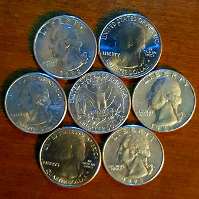

Coin Circles
Place a quarter on a table, and surround it with six other quarters
The quarters are almost, but not entirely, all in contact - the inner quarter touching all the outer ones, and each outer quarter touching both of its neighbors.

Why are there gaps? Is it due to imperfections in the coins, or would seven perfect circles arranged in this way have gaps as well? What happens if the size of the outer coins is different from the size of the inner coins?
Deriving an answer
We can answer these questions with geometry! We'll assume the inner coin has a radius \(a\), and the outer coins all have radius \(b\).
The centers of an inner coin and two touching outer coins form a triangle with inner angle \(\theta\). We can write an equation relating \(\theta\), \(a\), and \(b\) using the law of cosines, which states that for any triangle:
the sides \(x\), \(y\), and \(z\) are related by the equation $$z^2 = x^2 + y^2 -2xy\cos(\theta).\quad[1]$$ We can set up our coin triangle like this, so that \(x=a+b,\) \(y=a+b,\) and \(z=2b\).
Substituting those values for \(x,\) \(y,\) and \(z\) into equation [1] gives us $$(2b)^2 = 2(a+b)^2 - 2(a+b)^2\cos(\theta),$$ which can be simplified to $$2b^2 = (a+b)^2(1-\cos(\theta)).\quad[2]$$
Given values for any two of the unknown quantities, we can easily solve for the third. We can use that knowledge to answer this question: If we know the size of our inner coin, and we want to make a perfect ring around it with \(n\) outer coins, how large must each outer coin be?
If all of the outer coins surround the inner coin and form a perfect ring, each successive two outer coins must form the same triangle with the inner coin that was demonstrated in the last picture. If we have \(n\) outer coins, we also have \(n\) of these triangles, each with an angle \(\theta\) at the center of the inner coin. All of these angles must add up to 360°, so $$\theta = 360^{\circ} / n.$$ If we specify the fixed value \(a_0\) for the inner coin's radius, we can modify equation [2] to create a certain function of the outer coin radius \(b\): $$f(b)=2b^2-(a_0+b)^2\left(1-\cos\left(\frac{360^{\circ}}{n}\right)\right)$$ Why make up this function? If we can find a \(b_0\) such that \(f(b_0)=0\), then the values \(a=a_0\), \(b=b_0\), \(\theta=360^{\circ}/n\) solve equation [2]! In other words, we can use \(n\) outer coins of radius \(b_0\) to form a perfect ring around an inner coin of radius \(a_0\). And it's easy to numerically find the zeroes of functions like \(f\).
Example: Seven quarters
Let's use this to answer our first question: Should six quarters make a perfect ring around another quarter? Units don't matter, so let's assume our inner quarter has radius \(1.\) Using \(a_0=1\) and \(n=6,\) we can verify that \(f(1)=0,\) which means that \(b_0=1.\) In other words, to make a perfect ring around a quarter with six coins, each outer coin must be the same size as the inner quarter, i.e. another quarter! With perfect quarters, there would be no gaps.
Interactive demonstration
This same formula can be used to make an interactive coin ring app. Try it out!
| \(a\): | \(n\): |
Solution: \(b\) = 0.